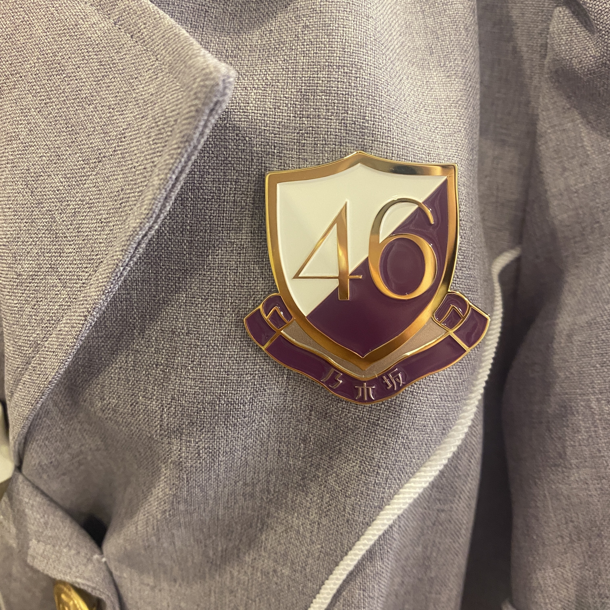

2021/0831Tueこれでおしまいです。ありがとう。
最後のブログです☺︎
約8年半本当にありがとうございました。
みなさんが
純奈ちゃんに出会ってお仕事も学校も
頑張れるようになったって、
お友達がたくさんできたって、
舞台のおもしろさを知ることができたって、
たくさん嬉しい言葉をかけてくれました。
じゅんは
みんながいたから頑張れたし、
大切でだいすきなメンバーができたし
自分が没頭できるお仕事に出会えました。
ファンのみなさんのおかげです。
ありがとう。
スタッフのみなさん
たくさんの道しるべを作ってくださって
ありがとうございました。
いつでも味方になってくれるスタッフさんが
いたからやりたい事もたくさんできました。
歌の楽しさを知れたのも舞台を知れたのも
スタッフのみなさんが導いてくれたからです。
感謝でいっぱいです。ありがとうございました！
メンバーのみんな！
無理せず自分らしく頑張りすぎなくて
いいんだからね☺︎じゅうぶん頑張ってるからね☺︎
ずっと見守ってるよ〜。
純奈を推していて楽しかったよ幸せだったよ
って言ってもらえて気持ちがすっきりしました☺︎
出会えてよかった。幸せだった！
みんな健康に気をつけてね。
これからもよろしくね。
また笑顔で会おうね〜

あーたのしかった！
夢のような時間でした！
またね！
2021.8.31
伊藤純奈
2021/08/31 19:00
コメント(1212)
純奈ちゃんありがとう！
これからもずっとだいすき！
これからもずっとだいすき！
ありがとうございました。
8年半お疲れ様でした、純さんに出会って、推して同じ舞台に立ちたいと思えてほんとに人生を変えていただきました。
これからは女優伊藤純奈として頑張り続けてください！
応援しています
これからは女優伊藤純奈として頑張り続けてください！
応援しています
純奈ちゃんお疲れ様でした。大好きです。
ありがとう。
純奈の迫力のある演技、歌声、好きでした。
お疲れ様でした
純奈の迫力のある演技、歌声、好きでした。
お疲れ様でした
じゅんちゃんお疲れ様でした！！！
じゅんちゃんのメンバーとの絡みや歌声にたくさん元気をもらいました
卒業後も頑張ってください
応援してます
じゅんちゃんのメンバーとの絡みや歌声にたくさん元気をもらいました
卒業後も頑張ってください
応援してます
涙が出ました
こちらこそ出会えてよかったです！
これからもじゅんちゃんらしく頑張ってください！
応援してます
今までお疲れ様でした！お疲れ様でした！
こちらこそ出会えてよかったです！
これからもじゅんちゃんらしく頑張ってください！
応援してます
今までお疲れ様でした！お疲れ様でした！
純奈本当にこれまでありがとう。純奈の歌声が聞けなくなるのは寂しいけどこれからも頑張ってください！応援してます！
じゅんなさんお疲れ様でした。
純奈さん、ありがとう
またどこかで！
またどこかで！
おしまい…嫌だ〜
これからも舞台頑張ってね
これからも舞台頑張ってね
ほんとにありがとうございました！！
楽しい思い出をありがとうございます！
純奈ちゃんのこれからの人生がより良いものになりますように！
楽しい思い出をありがとうございます！
純奈ちゃんのこれからの人生がより良いものになりますように！
また会おうぞ。
BIG LOVE
BIG RESPECT
BIG LOVE
BIG RESPECT
本当に卒業おめでとう そして8年間お疲れ様でした✨これからも頑張ってください ずっと応援しています
ほんとにお疲れ様でした(⸝⸝o̴̶̷᷄ o̴̶̷̥᷅⸝⸝)
頑張ってください！！
頑張ってください！！
本当にお疲れ様でした！！！
今後の活躍、期待しています！頑張ってください！！
今後の活躍、期待しています！頑張ってください！！
お疲れ様でした！
寂しいです。
舞台等出演決まったらインスタで告知お願いします！
会いに、観にいきます！
寂しいです。
舞台等出演決まったらインスタで告知お願いします！
会いに、観にいきます！
本当にありがとう。これからの純奈も応援してます！
純ちゃん、卒業おめでとう。約8年2ヵ月お疲れ様。
純ちゃんが乃木坂に加入してから、そして俺と出会ってから、純ちゃんと過ごした一瞬一瞬 全ての時間が俺の宝物だよ。
純ちゃんが進む道を、俺は共に歩くことは出来ないけど、その道が純ちゃんの幸せへと続く道だと俺は信じてるから。
今までありがとう
そして これからもよろしくな！純奈っ！
純ちゃんが乃木坂に加入してから、そして俺と出会ってから、純ちゃんと過ごした一瞬一瞬 全ての時間が俺の宝物だよ。
純ちゃんが進む道を、俺は共に歩くことは出来ないけど、その道が純ちゃんの幸せへと続く道だと俺は信じてるから。
今までありがとう
そして これからもよろしくな！純奈っ！
最後にミーグリで気持ちを伝えれてよかったです。
これからも一生推し続けます！！
これからも一生推し続けます！！
純ちゃん卒業おめでとう！本当に本当にお疲れ様でした！今後も純ちゃんの活躍を心待ちにしております。乃木坂46に加入してくれてありがとう！ずっとずっと大好きです‼️
8年間ありがとうございました。
乃木坂を卒業して新しい世界へ挑戦する純菜さんをずっと応援してます！
ありがとう伊藤純菜！
乃木坂を卒業して新しい世界へ挑戦する純菜さんをずっと応援してます！
ありがとう伊藤純菜！
8年間お疲れ様でした！
今まで本当にありがとう！
出会ってくれてありがとう！
純奈を応援できて幸せでした！
また会いましょう！
今まで本当にありがとう！
出会ってくれてありがとう！
純奈を応援できて幸せでした！
また会いましょう！
まずは、卒業おめでとう！！
夜明けの握手会で、じゅんみりのレーンに行ってから2期生のことがより好きになりました。
保護色の個握が無くなったことは悲しいけど、また何かイベントとかあれば行きます！！
夜明けの握手会で、じゅんみりのレーンに行ってから2期生のことがより好きになりました。
保護色の個握が無くなったことは悲しいけど、また何かイベントとかあれば行きます！！
純奈卒業おめでとう！
そして今までありがとう！8年半お疲れ様でした。
卒業してもお仕事頑張ってください！
そして今までありがとう！8年半お疲れ様でした。
卒業してもお仕事頑張ってください！
お疲れ様でした(TДT)
ブログ更新ありがとう。
卒業おめでとうございます！
お疲れ様でした。
また、純奈の笑顔がみれるのを楽しみにしてます。
卒業おめでとうございます！
お疲れ様でした。
また、純奈の笑顔がみれるのを楽しみにしてます。
じゅんちゃんほんとにありがとう！！！
8年間本当お疲れ様でした！
純奈さんがいる乃木坂が大好きでした！
本当にありがとうございました ♀️
純奈さんがいる乃木坂が大好きでした！
本当にありがとうございました ♀️
純奈ありがとう！寂しくなるけどこれからも応援してるよ
たくさんの元気をありがとう。
純奈さんのこれからに、多くの幸せが舞い込むことを願っています。そしてこれからも、しっかり応援させていただきます。本当にお疲れ様でした。
純奈さんのこれからに、多くの幸せが舞い込むことを願っています。そしてこれからも、しっかり応援させていただきます。本当にお疲れ様でした。
お疲れ様でした。これからも頑張ってください応援してます
卒業おめでとう！
8年間本当にお疲れ様でした！
ライブで歌う姿や舞台で活躍する純奈ちゃんが大好きでしたよ！卒業は寂しいですがこれからの
活躍も本当に楽しみにしています。
応援してますからね！またね！
ライブで歌う姿や舞台で活躍する純奈ちゃんが大好きでしたよ！卒業は寂しいですがこれからの
活躍も本当に楽しみにしています。
応援してますからね！またね！
じゅんなさん8年半お疲れ様でした！たくさんの元気と勇気をもらいました。これからの活躍も期待してます。ずっと応援してます。本当にありがとうございました！
ありがとうございました
幸せでした
幸せでした
純奈ちゃん、卒業おめでとう！
本当に純奈ちゃんと出会えて良かったです。
純奈のおかげで舞台に関わる仕事がしたいという夢を持つことが出来ました。
今はその夢の為に頑張っているところです。
純奈ちゃんを推していてとても幸せでした！
本当に卒業おめでとう！！
これからもずっとずっとだいすきです。
特別で大切な存在です。
純奈ちゃんがたくさん幸せでありますように！！
本当に純奈ちゃんと出会えて良かったです。
純奈のおかげで舞台に関わる仕事がしたいという夢を持つことが出来ました。
今はその夢の為に頑張っているところです。
純奈ちゃんを推していてとても幸せでした！
本当に卒業おめでとう！！
これからもずっとずっとだいすきです。
特別で大切な存在です。
純奈ちゃんがたくさん幸せでありますように！！
最後のミーグリで想いは届けられたと思うので会えて多くは語りません。
約8年半の間幸せを届けてくれてありがとう。
本当にお疲れ様。
純奈ちゃん一生大好きだよ。
純奈ちゃんの進む未来にまだまだついて行かせて下さい。
これからもよろしくね！！
ちゃんと紙のお手紙も書くね！
くろぴょん
約8年半の間幸せを届けてくれてありがとう。
本当にお疲れ様。
純奈ちゃん一生大好きだよ。
純奈ちゃんの進む未来にまだまだついて行かせて下さい。
これからもよろしくね！！
ちゃんと紙のお手紙も書くね！
くろぴょん
じゅんなちゃん卒業おめでとう！お疲れ様！！！
純ちゃんに出会えて本当に幸せでした！
これからもずっと応援してます！
これからもずっと応援してます！
じゅんちゃん卒業おめでとう！
これからの活躍も楽しみにしてます！
本当にお疲れ様でした！！！
これからの活躍も楽しみにしてます！
本当にお疲れ様でした！！！
お疲れ様でした。これからの道に幸あれ( ˘ω˘ )
おめでとう
ありがとう
お疲れ様
幸せになってね
(^o^)
ありがとう
お疲れ様
幸せになってね
(^o^)
純奈さん！
ご卒業おめでとうございますと共に、今までお疲れ様でした！
純奈さん推しになってから日は浅いですが、それだけでもすごく元気と勇気をもらいました。
もう乃木坂の純奈さんを見れないと思うととても寂しいですが、これから先もテレビや舞台で見れることを楽しみにしています！
本当に最高の推しでした！
ありがとうございました！
ご卒業おめでとうございますと共に、今までお疲れ様でした！
純奈さん推しになってから日は浅いですが、それだけでもすごく元気と勇気をもらいました。
もう乃木坂の純奈さんを見れないと思うととても寂しいですが、これから先もテレビや舞台で見れることを楽しみにしています！
本当に最高の推しでした！
ありがとうございました！
本当にありがとうございました！
お疲れ様でした！
純奈さん推してきてずーっと楽しかったし純奈さんのおかげで色々ことをしれました！！
うちのワンコも純奈さんの卒業悲しんでると思います。これからもうちの家族全員で純奈さん応援します！！！
ずっと大好きだよ！これからもよろしくね
お疲れ様でした！
純奈さん推してきてずーっと楽しかったし純奈さんのおかげで色々ことをしれました！！
うちのワンコも純奈さんの卒業悲しんでると思います。これからもうちの家族全員で純奈さん応援します！！！
ずっと大好きだよ！これからもよろしくね
純奈ちゃん約8年半お疲れ様でした！
純奈ちゃんのおかげで辛い時も
頑張れました！
これからもこれまでもずっと大好きです♡
ずっとずっと応援してます
純奈ちゃんの未来がキラキラ輝きますように★
純奈ちゃんのおかげで辛い時も
頑張れました！
これからもこれまでもずっと大好きです♡
ずっとずっと応援してます
純奈ちゃんの未来がキラキラ輝きますように★
お疲れ様
そして、ありがとう
そして、ありがとう
ありがとう純奈ちゃん！！！！！
スイカのタオルを持って純奈に会いに握手会に参加して個握も通おうって思った矢先コロナで会えるタイミングがなくなっちゃったけど純奈のかわいいとこもかっこいいとこも大好きで握手会も楽しくてまたいつか会えたらいいなぁなんて思ってるよ！2期の中で未央奈、みり愛、純奈の3人がすきで一気にいなくなっちゃうのすごく寂しいけど変わらず3人大好きだし純奈のこと大好きだよ！今までありがとう☺️お疲れ様


これからも舞台頑張ってね